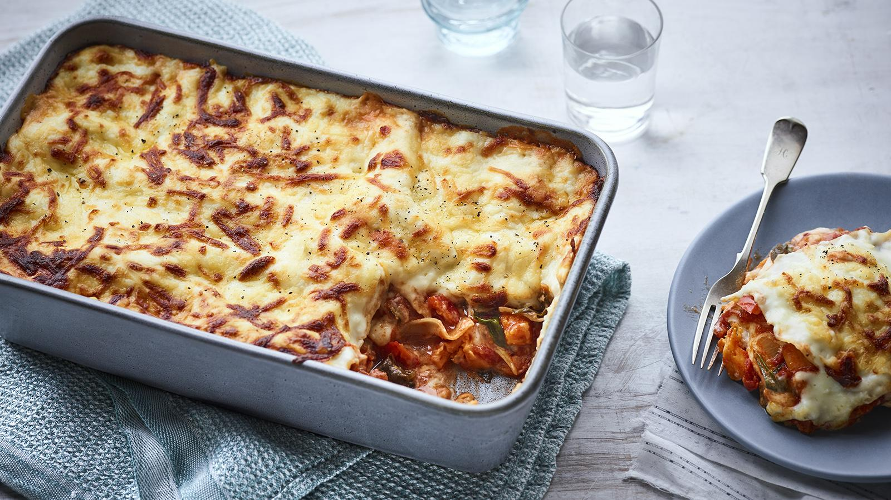

Lasagne

Description
Roast sweet potato, peppers, courgette and spinach combine to make this easy veggie lasagne. We really do think
this is the best vegetable lasagne recipe we've ever tried.
Ingredients
- 2 yellow or red peppers, seeds removed, cut into roughly 2cm/¾in chunks
- 1 courgette, about 300g/10½oz, quartered lengthways and cut into roughly 2cm/¾in chunks
- 1 large sweet potato, peeled and cut into roughly 2cm/¾in chunks>
- 3 tbsp extra virgin olive oil
- 1 large onion, finely chopped
- ½ tsp dried chilli flakes
- 2 garlic cloves, crushed
- 2 x 400g tins chopped tomatoes
- 2 tsp Italian seasoning or dried oregano
- 1 vegetable stock cube
- 200ml/7fl oz cold water
- 100g/3½oz young spinach leaves (optional)
- 9-10 dried lasagne sheets
- salt and freshly ground black pepper
For the cheese sauce
- 75g/2½oz plain flour
- 75g/2½oz butter, cubed
- 750ml/1¼ pint milk, semi-skimmed or full-fat
- 125g/4½oz mature cheddar, coarsely grated
- 75g/2½oz grated mozzarella, or extra cheddar